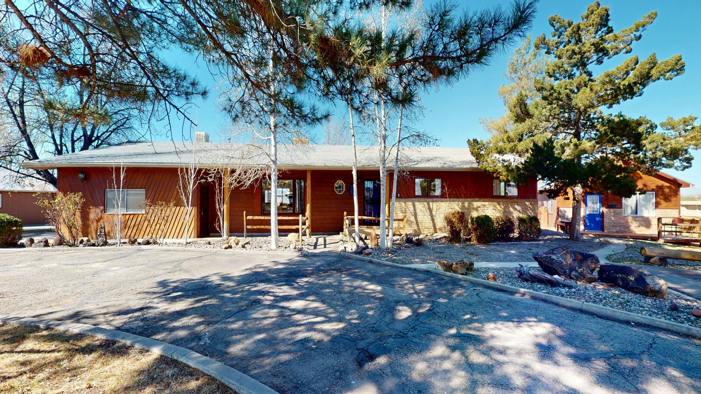
01
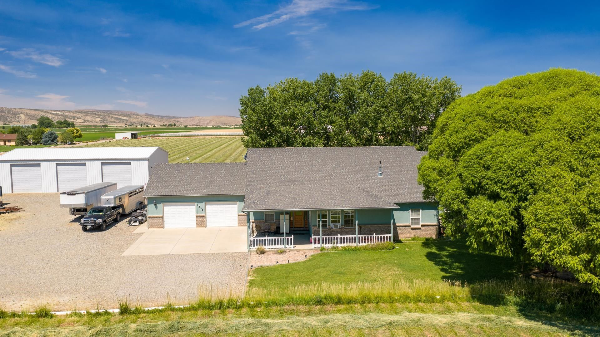
Mesa County · Colorado
Irrigated farm country at Interstate 70's Exit 15, northwest of Fruita, where Dave Kimbrough has sold homes.
Living in Loma
Loma sits at Exit 15 on Interstate 70, about 6 miles northwest of Fruita by road. Mesa County's 2009 plan for the area gives the name as Spanish for little hills, and Loma has no town government: it is a census-designated place in unincorporated Mesa County.
The 2020 Census counted 1,314 people in Loma. Water from the Government Highline Canal has reached its fields since 1917, and the county's plan counts three times the community grew: while the canal was built, from 1912 to 1918; when the federal government resettled 32 dust bowl families from the Eastern Slope; and again from 1990 to 2007.
12min
Fruita
26min
Downtown Grand Junction
26min
Grand Junction Regional Airport
Driving minutes from the Census center point of Loma, which has no town hall, without traffic: OSRM estimates on OpenStreetMap data, October 2026.
Highline Lake State Park
Two lakes north of town, with fishing, boating, camping and trails for hiking, biking and riding.
Kokopelli's Trail
The BLM's route to Moab, Utah, about 142 miles long, starting at the Loma boat launch.
McInnis Canyons National Conservation Area
BLM canyon country to the west, with mountain biking at Mack Ridge and hiking in Black Ridge Canyons Wilderness.
Rabbit Valley Trail Through Time
A 1.5-mile loop from the Mygatt-Moore Quarry, where the BLM lists sauropod and Allosaurus fossils.
Saved searches
Each card opens a live search of the Grand Junction Area REALTOR Association MLS listings, updated as they change.

01
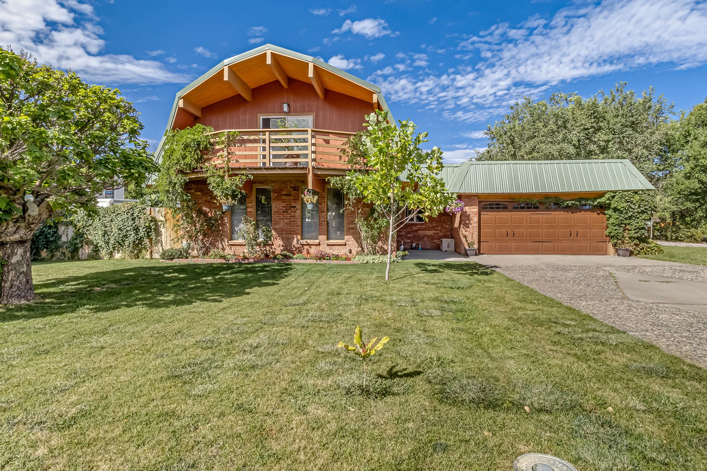
02
Homes with a detached shop, a barn or covered storage for equipment.
View homes
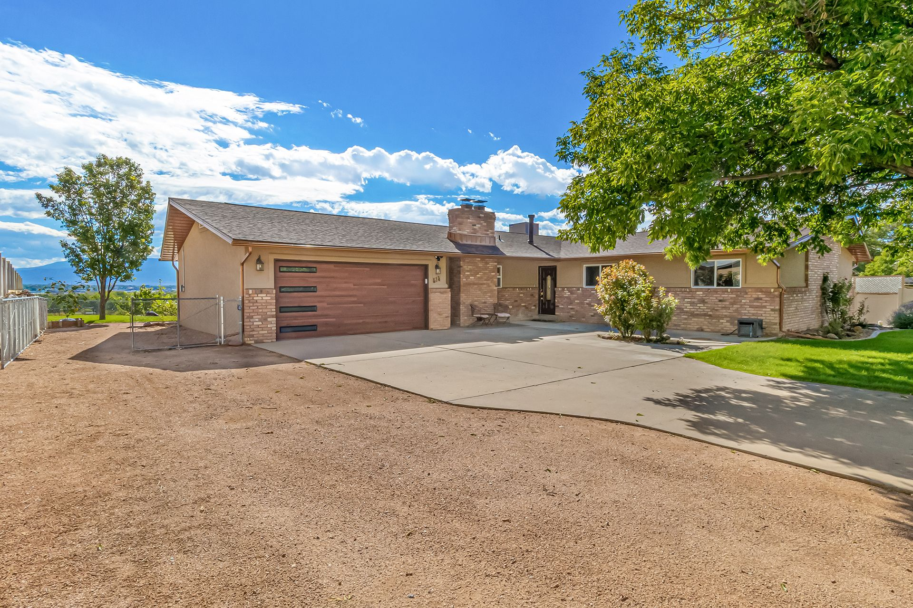
03
Listings marked horse property in the MLS, near Highline Lake's riding trails.
View homes
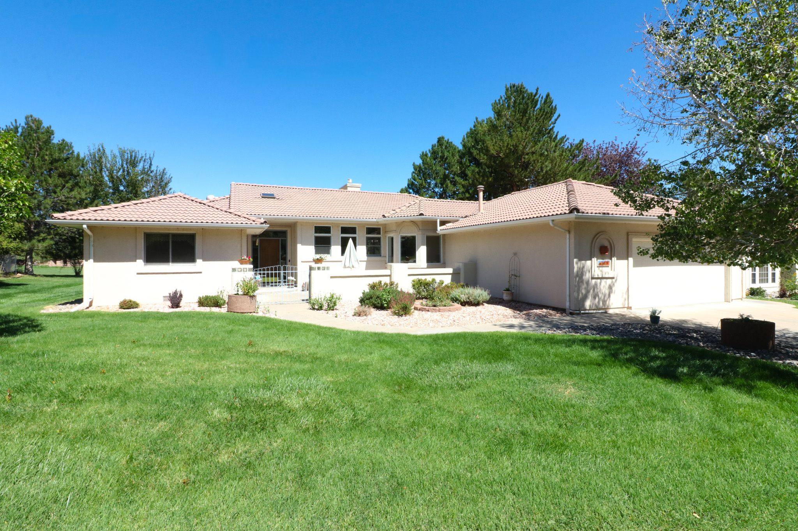
04
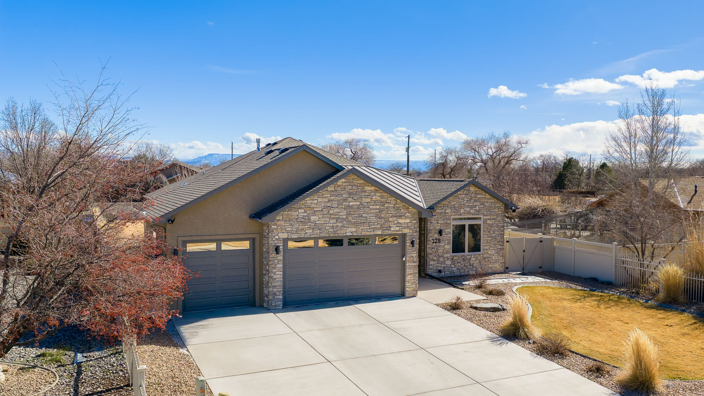
$598,000
1376 13 1/2 Road Loma, CO 81524
3 beds · 2 baths · 2,060 sq ft
Listed by The Agency Grand Junction
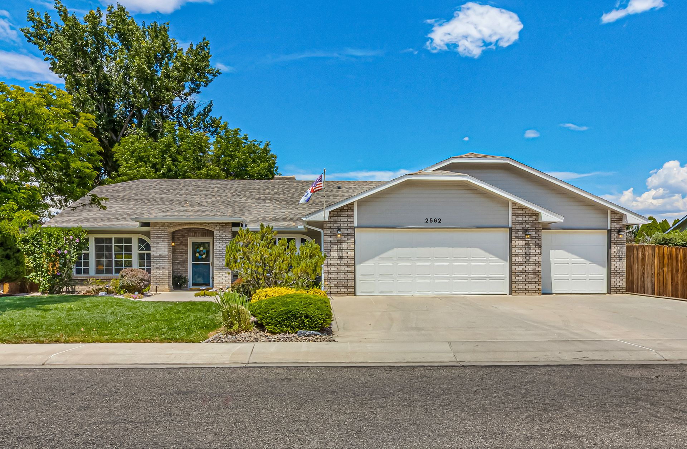
$545,000
1441 M 1/4 Road Loma, CO 81524
3 beds · 2 baths · 1,890 sq ft
Listed by The Agency Grand Junction
$689,000
4 beds · 3 baths · 2,720 sq ft
Listed by The Agency Grand Junction
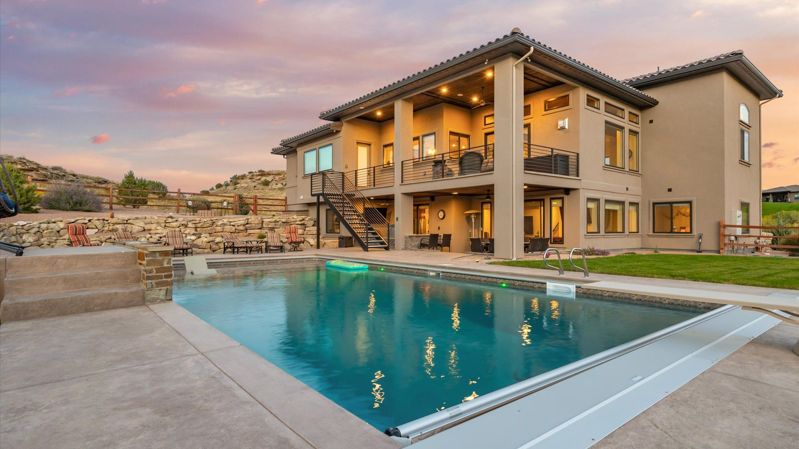
$515,000
1349 Willow Creek Drive Loma, CO 81524
3 beds · 2 baths · 1,720 sq ft
Listed by The Agency Grand Junction
Mesa County's Loma Community Plan, adopted in May 2009, gives the name as Spanish for little hills. You reach Loma from Interstate 70 at Exit 15. Highway 139 runs north from the interstate as 13 Road through town, and the plan treats it, U.S. Highway 6 and the railroad as the community's main routes.
Loma has no town hall. As a census-designated place it is governed by Mesa County, which plans Loma and its neighbor to the west, Mack, as separate community areas.
By 1899 nearly 17 miles of new ditches were finished around Loma. In 1901 the Colorado Sugar company opened 1,000 acres to settlers who would grow sugar beets, and beets stayed a major crop until the Delta sugar beet factory closed in the mid-1970s.
In 1907 Verner Z. Reed bought land two miles northeast of town for an apple orchard, the Golden Hills Ranch, which was sold at auction in 1923. The Loma School went up in 1910, built of yellow brick fired on the grounds.
The Government Highline Canal began supplying Loma in 1917, and the county's plan names it as the source of the community's irrigation water, with the Grand Valley Drainage District handling drainage. Highline Lake, north of town, was completed in 1967 using water from the same canal.
Not every listing comes with water, and the ones that do differ in what they include. If the water matters to your plans for a pasture or a garden, ask Dave to confirm what a listing includes before you make an offer.
From Exit 15, Colorado Parks and Wildlife sends visitors five miles north on Highway 139, left on Q Road, then north on 11 8/10 Road to the visitor center. The park holds two lakes, Highline Lake, completed in 1967, and Mack Mesa Lake, built in 1952.
CPW lists 56 campsites, 105 picnic sites and 9.6 miles of trails, with fishing, boating, hiking, biking and horseback riding.
Kokopelli's Trail starts at the Loma boat launch parking lot and runs about 142 miles to Moab, Utah. The BLM's directions take the Loma exit, then the gravel frontage road west along the south side of the interstate to the trailhead.
West of town, the McInnis Canyons National Conservation Area adds mountain biking at Mack Ridge, off-highway trails at Rabbit Valley and hiking in the Black Ridge Canyons Wilderness.
Day to day
School information is factual and by district. Always confirm a specific address in the district's school finder.
Dave's sales
Recent sales from his record in the MLS, with the price each home sold for.
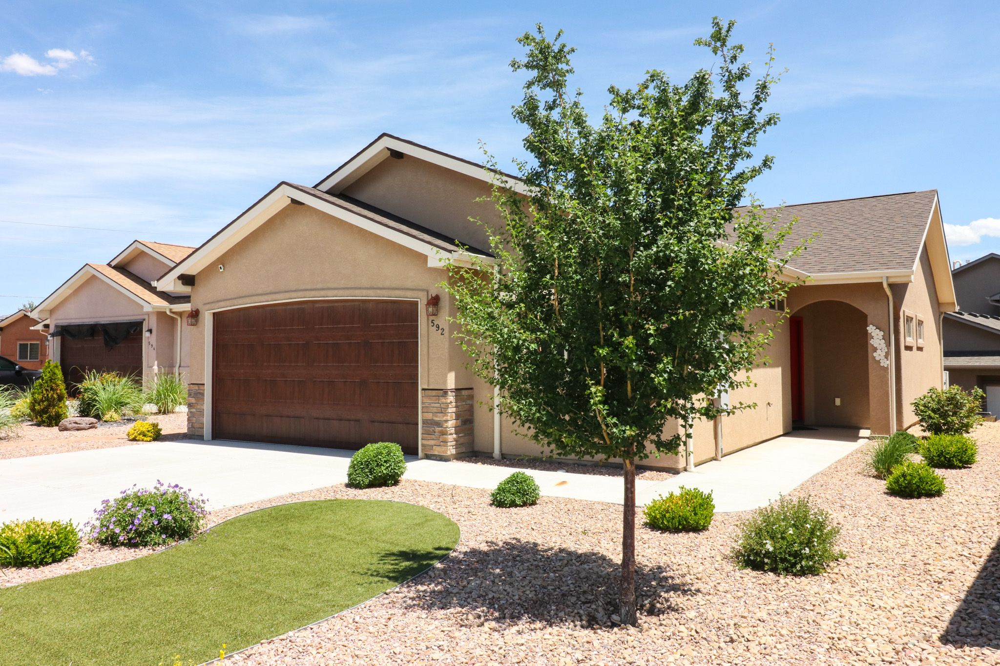
Sold
$562,000
1407 L 3/4 Road Loma, CO 81524
3 beds · 2 baths · 1,940 sq ft
Sold by Dave Kimbrough
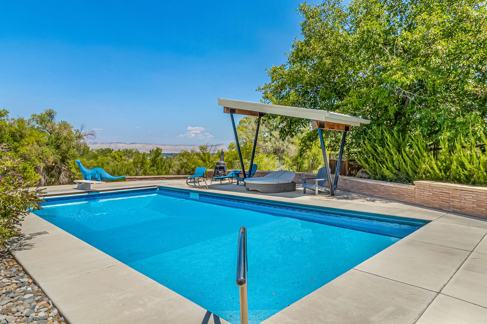
Sold
$639,000
4 beds · 3 baths · 2,380 sq ft
Sold by Dave Kimbrough
Sold
$1,095,000
1720 11 1/2 Road Loma, CO 81524
5 beds · 4 baths · 4,260 sq ft
Sold by Dave Kimbrough
Questions
No. Loma is a census-designated place in unincorporated Mesa County, so the county is its local government. Mesa County's Loma Community Plan, adopted in May 2009, covers the area.
Mesa County Valley School District 51. Loma Elementary School is on 13 Road in Loma, and the county's 2012 Mack plan says older students in the area attend middle and high school in Fruita. Confirm the campus for any address with the district.
Some do. Mesa County's plan names the Government Highline Canal as the source of Loma's irrigation water, but what a property includes changes from one listing to the next. Ask Dave to confirm the rights or shares before you make an offer.
About 18.5 miles by road to downtown Grand Junction, roughly 26 minutes without traffic by OpenStreetMap routing. Fruita is about 6 miles, or 12 minutes.
Nearby

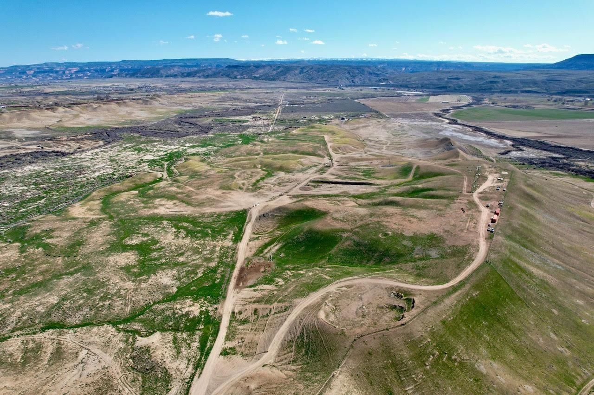
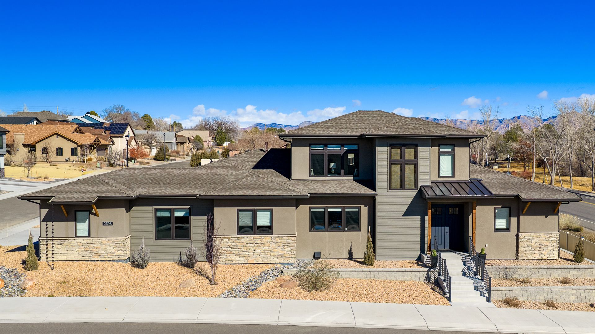
Resources
Contact
Tell Dave how much ground you want, whether it needs water, and what has to fit in the shop. He has sold homes in Loma and will send the listings that fit.